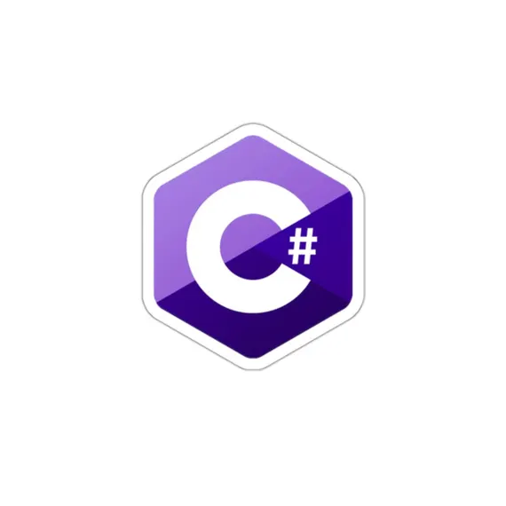
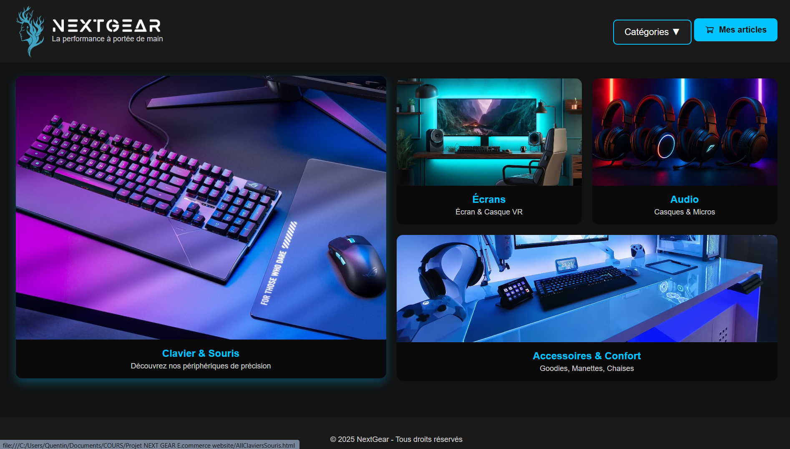
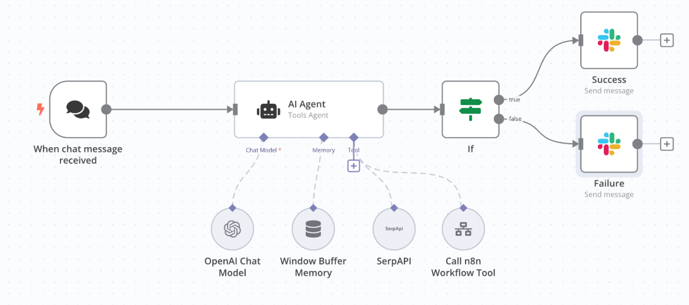

Compétences techniques

HTML

CSS
JavaScript

PHP

C#

Python
Développeur Web • Étudiant BTS SIO SLAM
Je suis Quentin Lombard, étudiant en BTS SIO option SLAM au Lycée Jean Mermoz. Passionné par le développement web, la création de solutions modernes et les outils d’automatisation. J’aime concevoir des interfaces propres, efficaces et centrées utilisateur.
Téléphone : 07 69 73 53 53
Email : lombardquentin01@gmail.com

Création d’un site e-commerce dédié au matériel gaming : interface moderne, catégories dynamiques, design sombre et immersif.

Création d’un workflow intelligent intégrant un AI Agent, OpenAI, SerpAPI et Slack pour automatiser le traitement des messages et la prise de décision.
HTML
CSS
JavaScript
PHP

C#
Python
Développement d’applications web, gestion de bases de données, projets logiciels.
Réseaux, systèmes, sécurité informatique, maintenance et infrastructures.
Création d’un site vitrine professionnel et réalisation d’un plan du site sous Figma.
Développement d’automatisations via n8n pour améliorer les flux internes et réduire les tâches manuelles.